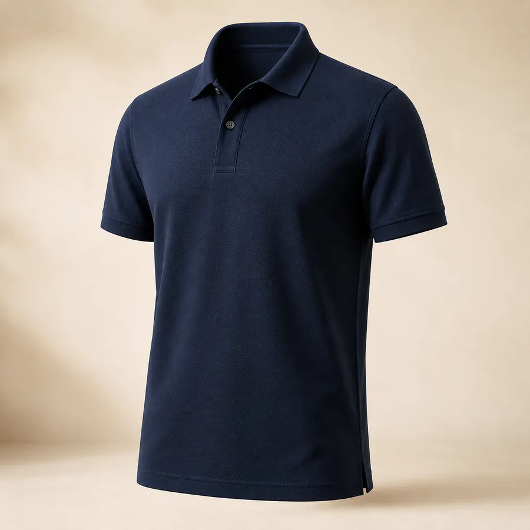
PERSONEL KIYAFETLERİ
İşletmenize Özel Personel Kıyafetleri
Sıfır yaka ve polo yaka tişört, sweatshirt, hoodie, önlük, iş pantolonu ve şapka; baskı, nakış, logo ve özel etiket seçenekleriyle kurumsal kullanıma hazırlanır.
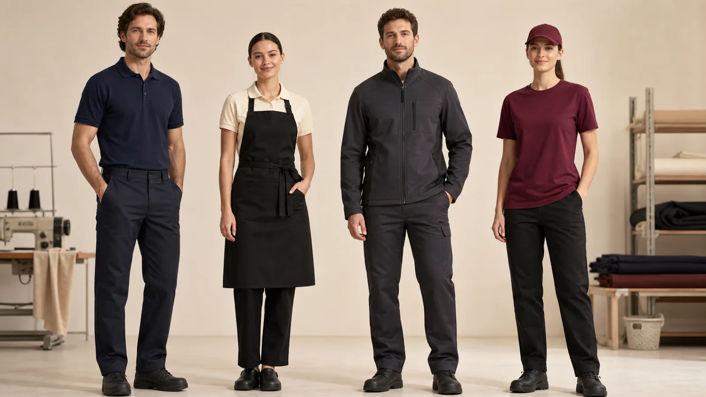
KULLANIM ALANI
Personel kıyafetlerinde doğru ürün seçimi
Model, kumaş ve renk seçenekleri; baskı, nakış, logo ve özel etiket uygulamalarıyla çalışanların kullanım koşullarına göre belirlenir.
KURUMSAL KOLEKSİYON
Ürün Grupları
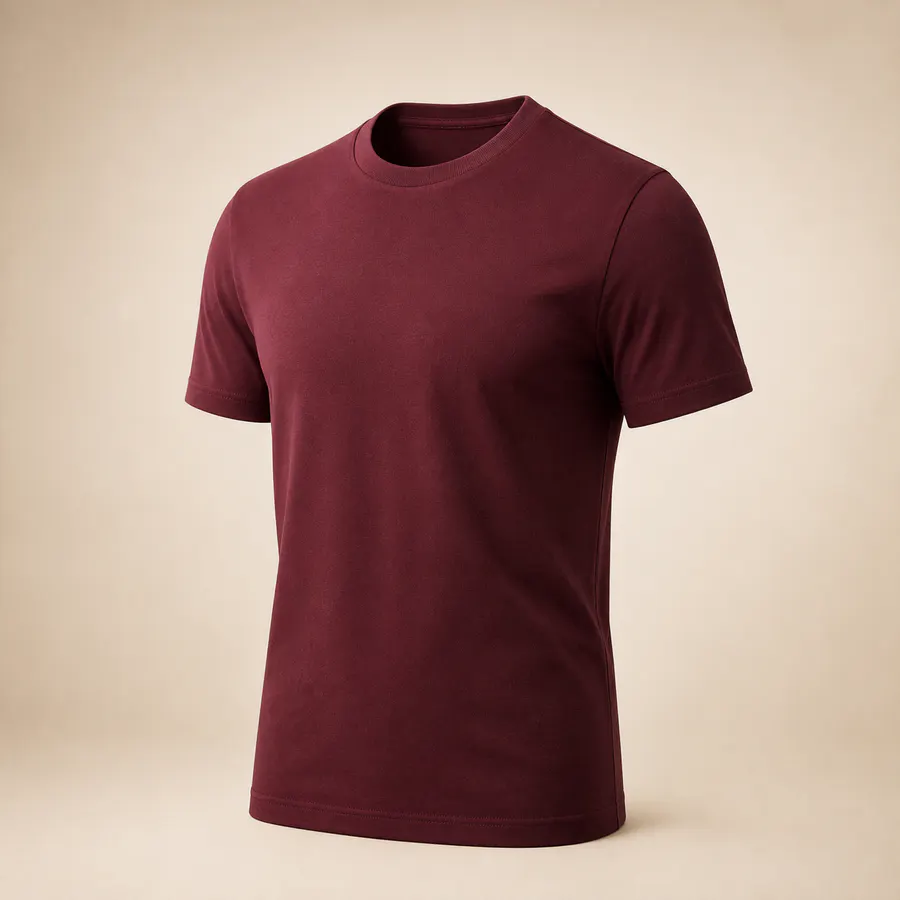
Sıfır Yaka
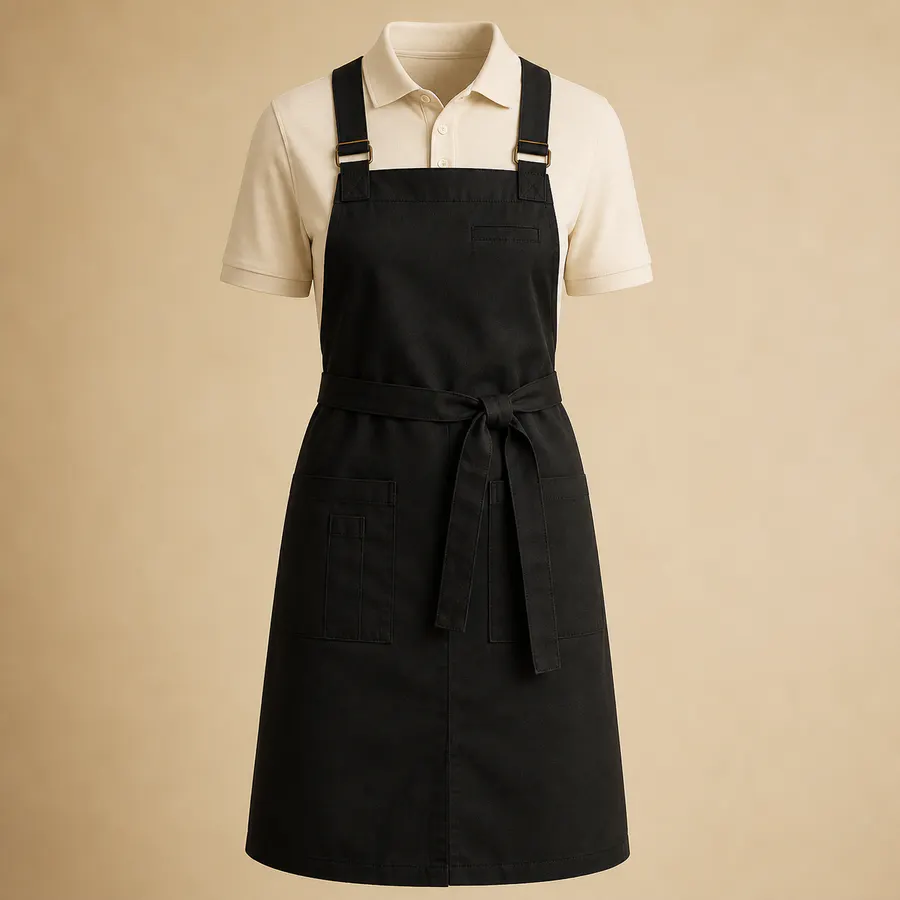
İş Önlükleri
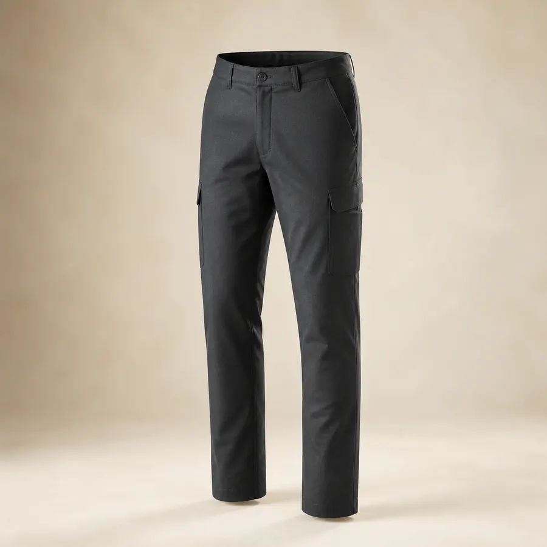
İş Pantolonları
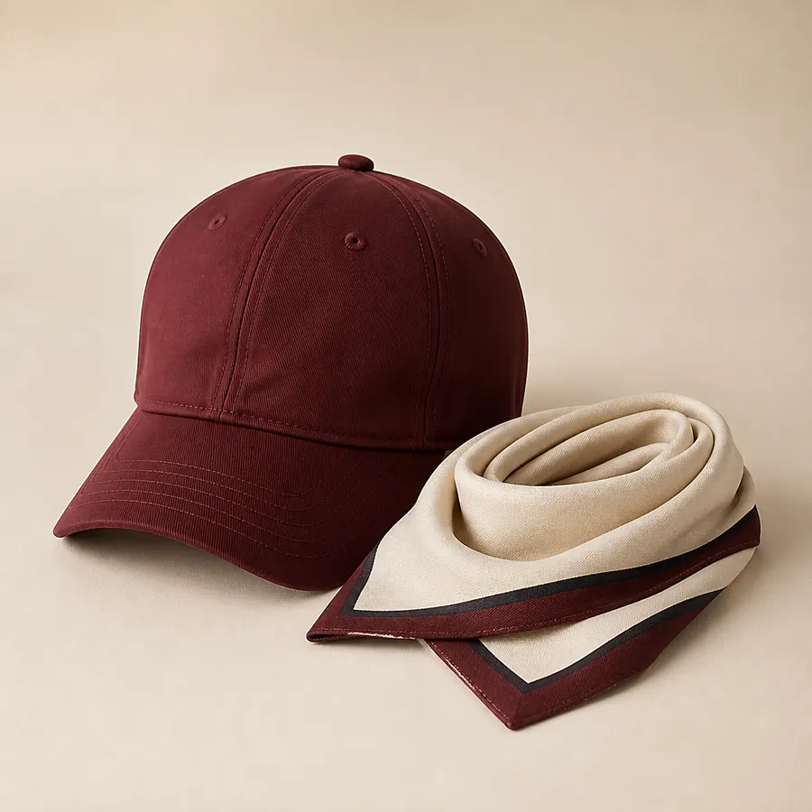
Şapka ve Aksesuarlar
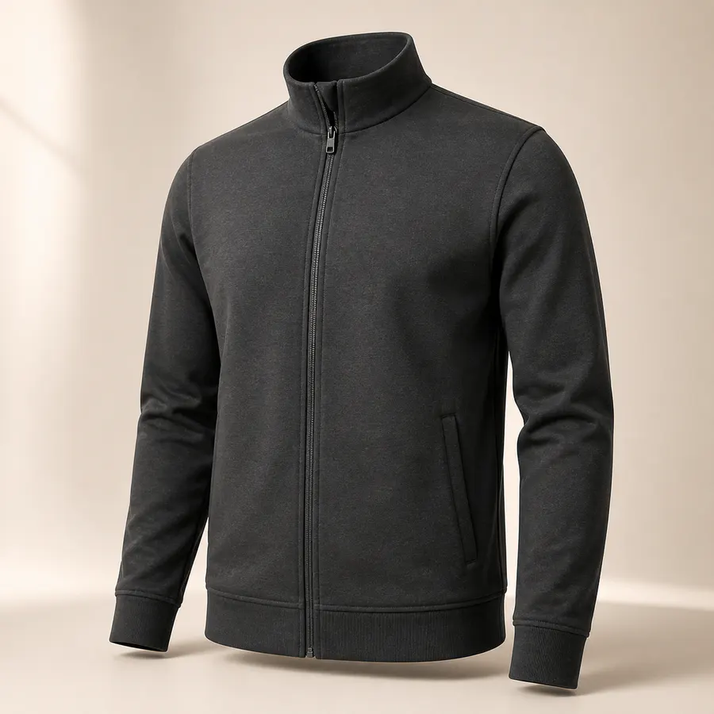
Sweatshirt ve Üst Giyim
KURUMSAL UYGULAMALAR
Kurumsal Kimliğinizi Ürüne Uygulayın
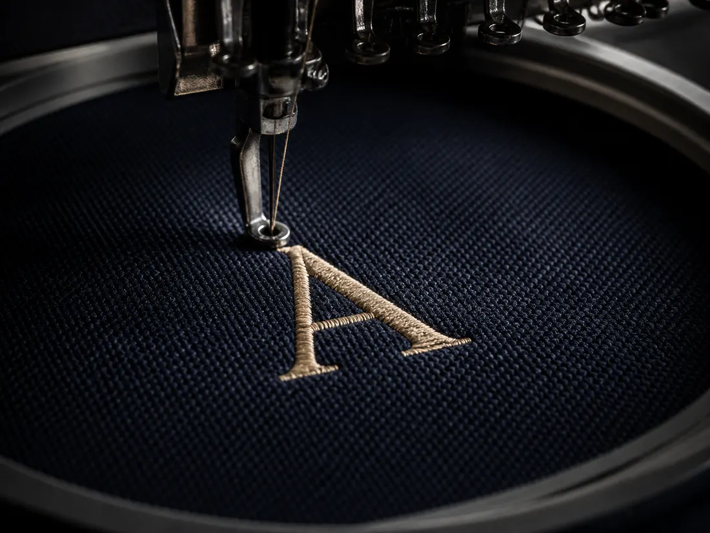
01
Nakış
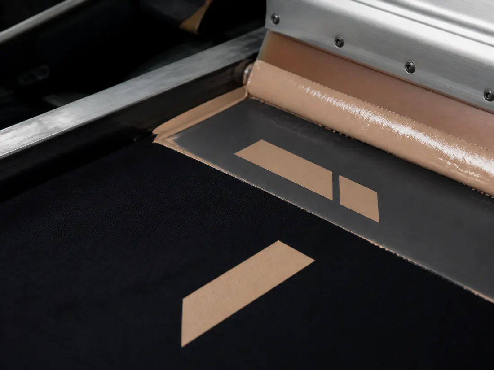
02
Baskı
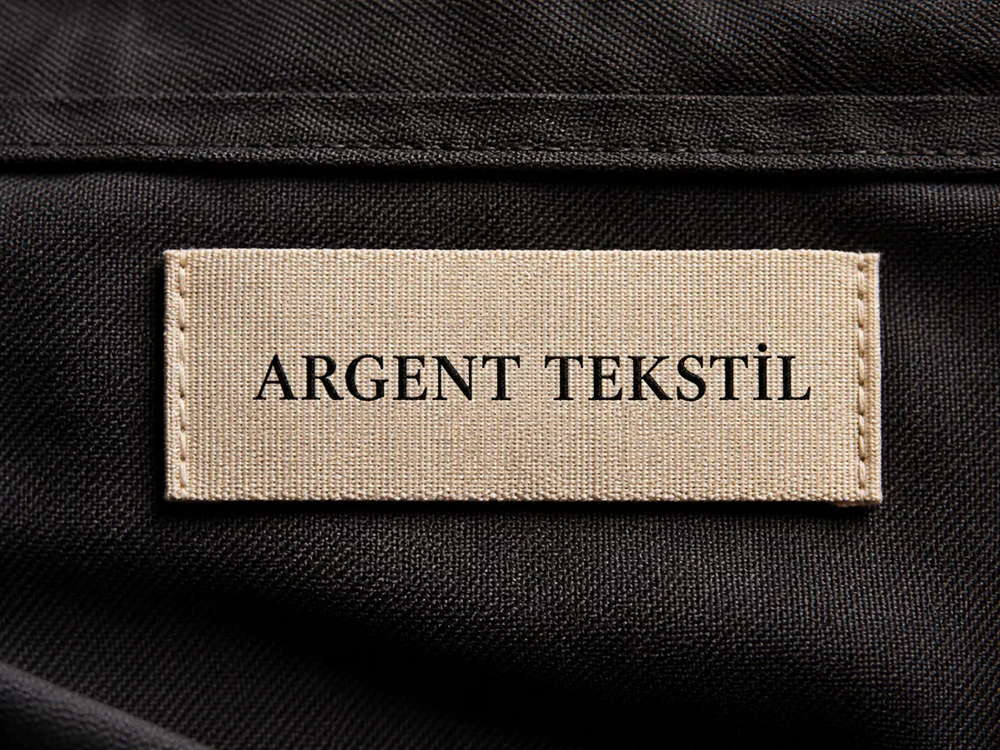
03
Özel Etiket
ÇALIŞMA ALANLARI
Farklı Sektörlere Uygun Personel Kıyafetleri
Restoran ve Kafe
Otel ve Turizm
Fabrika ve Üretim
Mağaza ve Perakende
Lojistik ve Depo
Saha Ekipleri
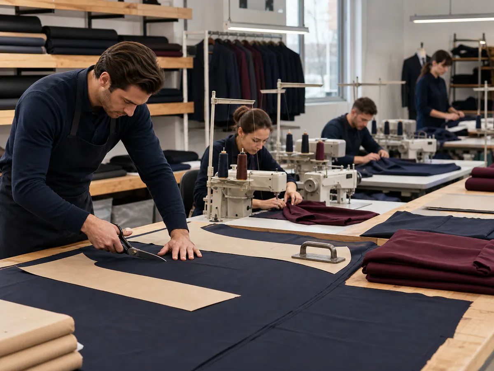
ÜRETİCİDEN İŞLETMENİZE
Aracısız, Doğrudan Üretim
Personel kıyafeti ihtiyacınızı üretim ekibiyle doğrudan değerlendirerek ürün ve uygulama kararlarını netleştiriyoruz.
- Üreticiyle doğrudan iletişim
- İşletmeye göre model ve ürün seçimi
- Baskı ve nakış uygulamaları
- Siparişe göre beden ve ürün planlaması
ÜRETİM AKIŞI
Üç Adımda Başlayın
01
İhtiyacı Belirleyelim
Ürün grubu, kullanım alanı, adet ve beden dağılımını belirleyelim.
02
Modeli Hazırlayalım
Model, kumaş, renk ve logo uygulamasını netleştirelim.
03
Üretime Geçelim
Onaylanan ürünleri üretip kontrollerini tamamlayalım.
PERSONEL KIYAFETLERİ
Personel kıyafeti ihtiyacınızı bize iletin.
Ürün grubunu, yaklaşık adedi ve varsa logo uygulamanızı paylaşın; talebinizi değerlendirelim.